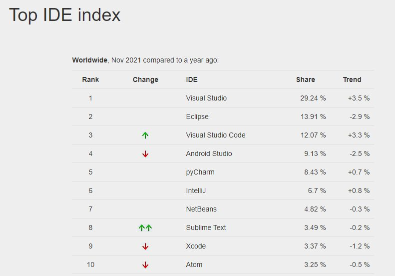
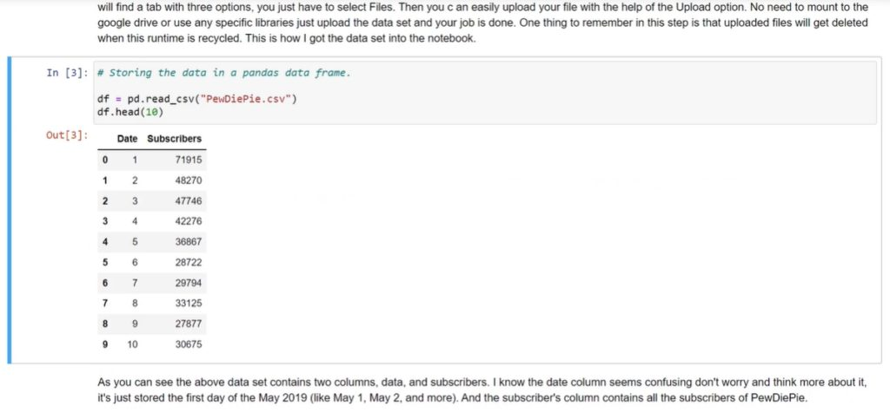
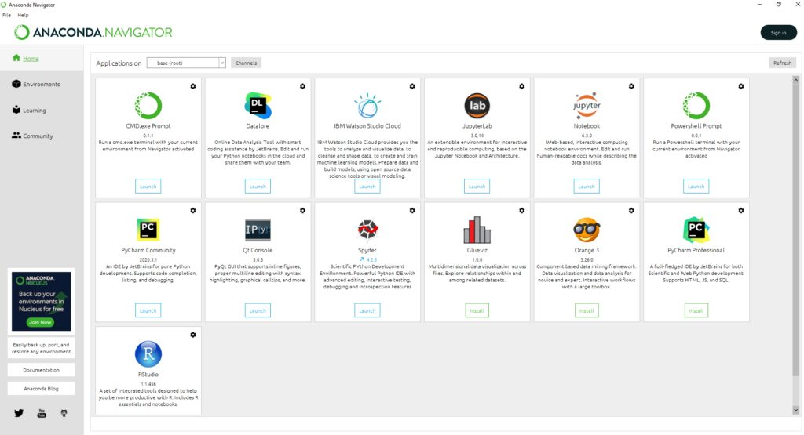

IDE’s & Jupyter Notebook
Most programmers make use of applications called Integrated Development Environments, or IDEs, that aid the programming process.
An Integrated Development Environment is a software application that provides comprehensive facilities to computer programmers for software development. An IDE normally consists of at least a source code editor, build automation tools and a debugger.
Wikipedia
For an up-to-date list of the most popular IDE’s in use, check out the Top IDE Index:

Jupyter Notebook is an IDE for Python that allows its users to create documents containing both rich text and code. It also supports the programming languages Julia, and R. The term Jupyter is a combination of the words Julia, Python and R and is the IDE of choice for many people using Python because it’s both simple to use and it’s designed for easily distributing your results. This ease of communication is why it’s particularly popular with businesses.
For example, this report on predicting the growth of subscribers for a popular YouTube channel is clearly laid out in a document-like format. But if we scroll down, we can see snippets of code that we can run in real time to view the live output:

See the full report
By default, we can see the output provided by the person who created this report but this code is interactive, so we could actually make alterations and get different results.
However, Jupyter is not the only IDE used by people coding in Python. More experienced programmers often use an IDE called Spyder, which is closer in design to more typical IDEs used by programmers.
Anaconda
Anaconda is essentially a package that allows us to quickly and correctly install Python, and a range of popular machine learning-based IDEs.

Anaconda is essentially a one-stop-shop data science toolkit.
…The easiest way to perform Python/R data science and machine learning on a single machine. Developed for solo practitioners, it is the toolkit that equips you to work with thousands of open-source packages and libraries
Anaconda.com
In Kubicle, and for all Python Training, we utilize Jupyter Notebook and recommend executing from Anaconda – as the installation is straightforward and very little custom configuration is required.
Tough technical initial configuration of an IDE can often be the first stumbling block for novices – something that often prohibits further learning. In Kubicle, we speak from experience!
Importantly, in Kubicle’s online training we use Python 3. As such, if you’re installing Anaconda for the purposes of learning with us — be sure to install Anaconda 3!
Kubicle offers a range of courses in Python & Machine Learning in Python
Topics Include: Python Fundamentals | Functions, Conditionality & Loops | Storing, Transforming and Visualizing Data | Data Preparation | Connecting to Live Data | Regression Analysis in Python | Decision Trees in Python | K-Means Clustering in Python
We offer a 7 day free trial to all learners. Sign up now!